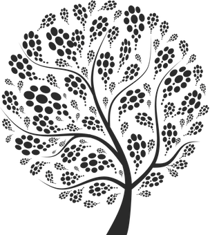

Chris Halaschek
I'm a full-stack engineer and data architect who has been building real-time, web-based systems for the past 10+ years.
My work has taken me from academia, where I researched semantic web technologies, to startups building platforms for content syndication, financial services and gaming.
Recent Projects

Trend Wars
HashGo
Conditionality
Clados

PhD Thesis
U. of MD
Side Play
HashGo

ODR
Open Data Registry
Rock Paper Thing
HashGo
Publications
Journal
Conference
M. O’Connor et al. Mapping Master: a Spreadsheet to OWL Mapping Language. Int'l Semantic Web Conf. 2010.
Workshop
Other